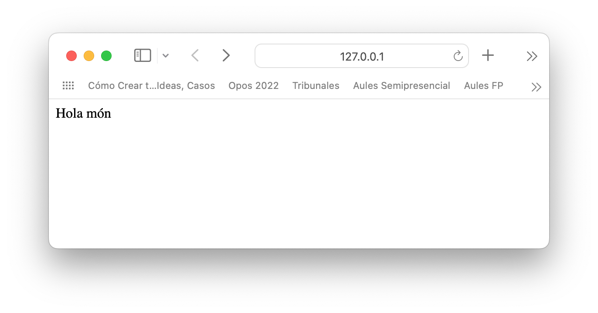

4. Servidors amb Flask
Primer programa en Flask
Per començar crearem un nou entorn per a tota la programació en flask
Preparant l'entorn
a continuació:
- Instal·lem flask amb
conda install flask - Creem el programa principal, amb nom
app.py(per exemple) - (Linux) Exportem el nom de l'aplicació
export FLASK_APP=app.py - (Windows)
set FLASK_APP=app.py - S'executa amb
flask run
Un cop executat, ens apareixerà una cosa com:
| Text Only | |
|---|---|
El que ens diu que tenim un servidor escoltant al port 5000, i podem obrir-lo al navegador. Vegem el primer programa com quedarà
Hola món amb Flask
A comentar:
- A la primera línia importem el framework, creant a continuació amb el constructor el nostre servidor.
- Es defineix un primer recurs a oferir (la
/o també el recurs arrel) dins dels nostre servidor, que ens retornarà un string amb la salutacióHola món. - La ruta s'indica amb l'anotació
@app.route(ruta), i si no es posa res més s'enten que la petició ésGET - Aquesta servidor serà llançat desde el programa principal (aquell que s'anomena main)
Llavors ja podem accedit des del navegador a dit recurs: 
Mapejant noves rutes i mètodes
Si volem podeer mapejar altre tipus de peticions, hem d'indicar quin mètode és. Podem fer-ho indicant-ho com a paràmetre del app.route(). Ademés hem d'extreure el JSON que ens ha enviat el client dins del cos, cosa que podem fer amb el mètode request.get_json(), que ens retorna el json del body de la petició dins d'un diccionari python.
Primer exemple de POST
- Comentar que hem d'afegir noves importacions, amb la línia
from flask import Flask, jsonify,request. - Ademés podem afegir a la resposta, el codi HTTP per a que el client sàpiga quin és l'estat de la seua petició.
Un POST més complexe i amb control d'errors
Ací observem que:
- dins de l'anotació
@app, en compte de la combinaciórouteimethodpodem programar directamentapp.post,app.get(per defecte),app.delete, etc. Això facilita la lectura del nostre programa - Un cop recuperat el json que ens envia el client, podem comprovar els elements necessaris, a la condició de la línia 4. Cas de faltar-ne algun retornem un error 400 (petició mal formada)
Recuperant dades dels paràmetres o de la ruta
Com sabem hi han 3 maneres bàsiques de passar dades a la nostra API, que son mitjançant paràmetres, variables de ruta i al cos de la petició:
- Paràmetres → un cop escrita la ruta, s'afig un símbol d'interrogació (
?) i es confecciona una llista de paràmetres ambnom=valor. Per exemplelocalhost:5000/cliente?username=Pepe&password=1234. Per a aconseguir-ho els valors del paràmetres farem servir els mètoderequest.args.get(nom_paràmetre)
Recuperació de paràmetres
- Variables de ruta → dins de la propia ruta apareix un codi o valor que simbolitza una dada. Per exemple
localhost:5000/cliente/12on s'arreplegaria les dades del client de codi 12. Per a aconseguir-ho caldrà afegir a la funció que mapeja la ruta un paràmetre amb el mateix nom que podem dins de ladefinició de la ruta.
Recuperació de paràmetres
- Cos de la petició → les dades es passen al cos de la petició dins d'un JSON. Ja ho hem vist anteriorment, amb el mètode
body=request.get_json()
Creant API's amb flask
Flask incopora unes llibreries a traves del paquet flask-restful per a facilitar la construcció de API. Per això necessitem:
conda install flask-restfulfrom flask_restful import Api,ResourceApidefinirà una Api dins de la nostra appResourcedefinirà cadascun dels recursos o rutes dins de la nostra API
La classe Resource és una interfície, que conté els mètodes post(),get(), delete(), etc... Si volem crear una API que atenga a dits mètodes, deurem crear una classe que implemente dita interfície, i implementar cadascun dels mètodes.
Per afegir desprès la ruta a cadascun dels mètodes anteriors, ho podem fer amb el màtode api.add_resource(classe, ruta).
Exemple de implementació de Resource
Amb això hem definit els 4 mètodes (post, get, delete i put) per a la ruta /add
Projecte
Crear una xicoteta api en Flask que:
- Tinga una petició de benvinguda a l´'index que retorne
Holaseguit de la data actual - Una petició de
/registerque reb al cos un username, password i icono, i ho emmagatzeme en una BBDD mongoDB que haurem creat per a l'ocasió. El icono servirà per a l'avatar. Recorda de guardar el password encriptat (llibreriabcrypt). Hi haurà un contador de tokens, iniciat a 10, que son les consultes que pot fer-nos l'usuari. Retornarà un missatge "Hola nom, et queden 10 tokens" - Una petició de
/login, que reb al cos el username i password. Cas d'estar tot be, retornarà un200 OKi el avatar de l'usuari. - Una petició de
/consulta, amb unusername i password. - Cas d'estar tot be retorna un missatge de
Consulta efectuada. Et qeden X tokens. - Cas de no quedar tokens un codi d'error i un missatge de
Efectua recàrrega - Una petició de
/refill, amb unusername,admin_pw(un password de administrador) iamount, que augmentarà la quantitat de tokens. Retornarà: - Un
200 oki un missatge amb la quantitat de tokens actualitzada - Un codi i missatge d'error si l'usuari no existeix o que el password d'administrador és incorrecte. Aquest password serà fixe (
S3g1r0) - A mode de administració, implementar un
GET /loginque retorne tots els usuaris de la BBDD, passant-li com a paràmetre el password de l'adminstrador
Warning
| Text Only | |
|---|---|
1 2 | |